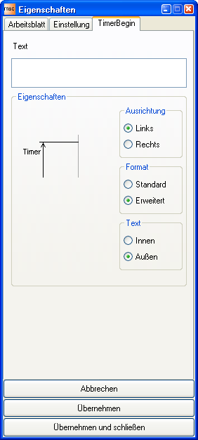

Über diesen Dialog lassen sich die Eigenschaften des Timeranfangs verändern.
Die Änderungen werden erst nach Betätigung der Schaltfläche "Übernehmen" bzw. "Übernehmen und schließen" in das Diagramm und die Diagrammbeschreibung übernommen.
Die Schaltfläche "Abbrechen" schließt den Dialog ohne die Änderungen in das Diagramm zu übernehmen.
|
 |
 Siehe auch
Siehe auch